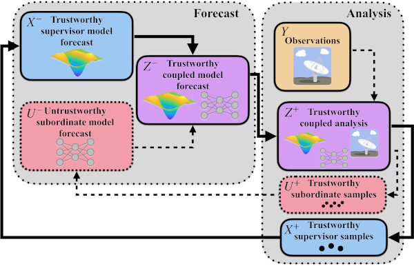
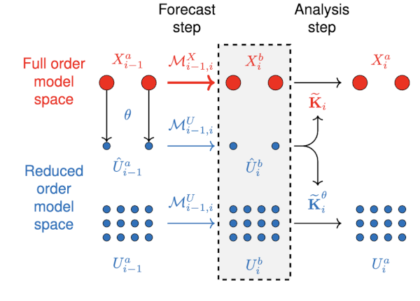
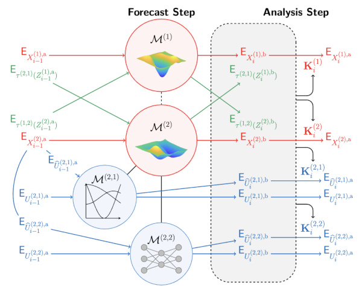

How can we make use of computer models that are untrustworthy, like those created by data-driven methods such as neural
networks? Multifidelity and model forest methods build a hierarchy of models where the principal, top-level, model is
based on theory and expert understanding, meaning that it is trustworthy. The subsequent lower level models are all less
trustworthy than the principal model, meaning that these so-called ancillary models can for-go theory and instead be based
on data. Models such as neural-networks, and reduced-order models can be very cheap for the predictive power that they
provide, but are much less interpretable and much less trustworthy.

In the figure above, the bifidelity ensemble filtering architecture is described. Prior information is forecasted through
two different models. The first being a trustworthy "supervisor" model, with the second being an untrustworthy "subordinate"
model. That information is combined into one source of information, begetting the total prior information. Observations from
sensors are then filtered together with this total prior information to beget our posterior information. Samples from this
total posterior information are taken (through either deterministic of stochastic means) and the cycle repeats.

In the figure above, the bifidelity ensemble Kalman filter architecture with reduced order modeling is described. The top-level
full order model has two samples which are transformed into the space of the reduced order model, creating what is known as a
control variate. The information from the full order model and the 12 samples of the reduced order model is coupled through the
use of this control variate, and a Kalman gain is constructed. This Kalman gain is used to update the full order model and
reduced order model ensembles. The ensemble members are propagated and the cycle repeats.

In the figure above, the model forest ensemble Kalman filter architecture is described. This generalizes the above bifidelity
ensemble Kalman filter by having the possibility of multiple top-level full order models, and multiple layers and branches of
lower-level subordinate reduced order models.